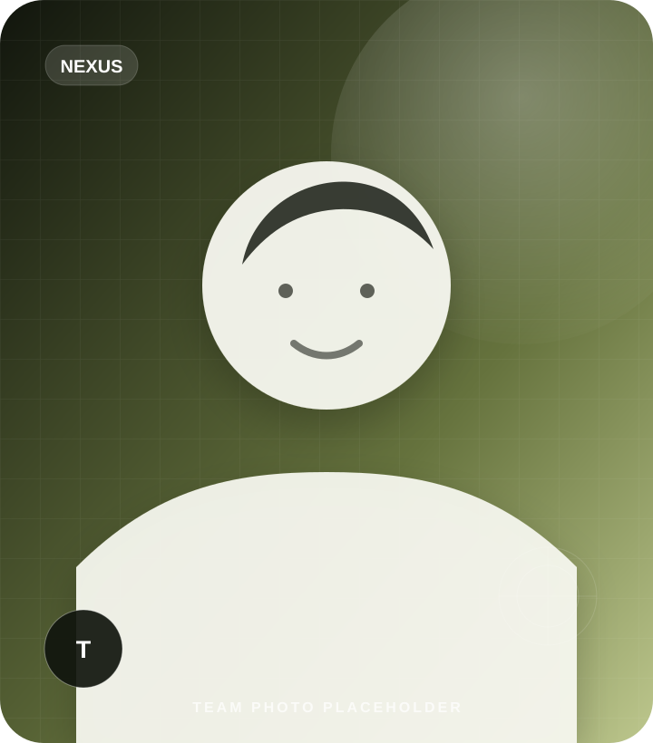
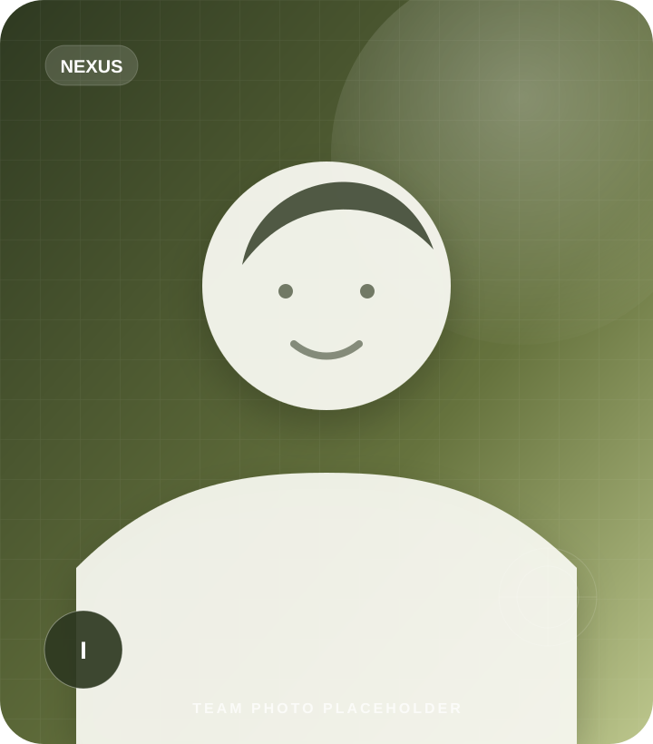
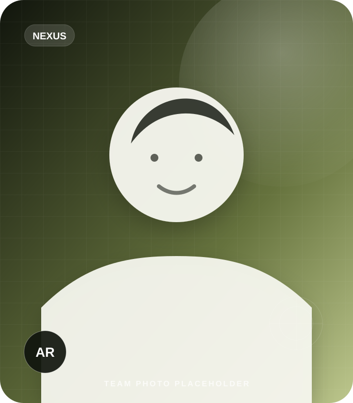
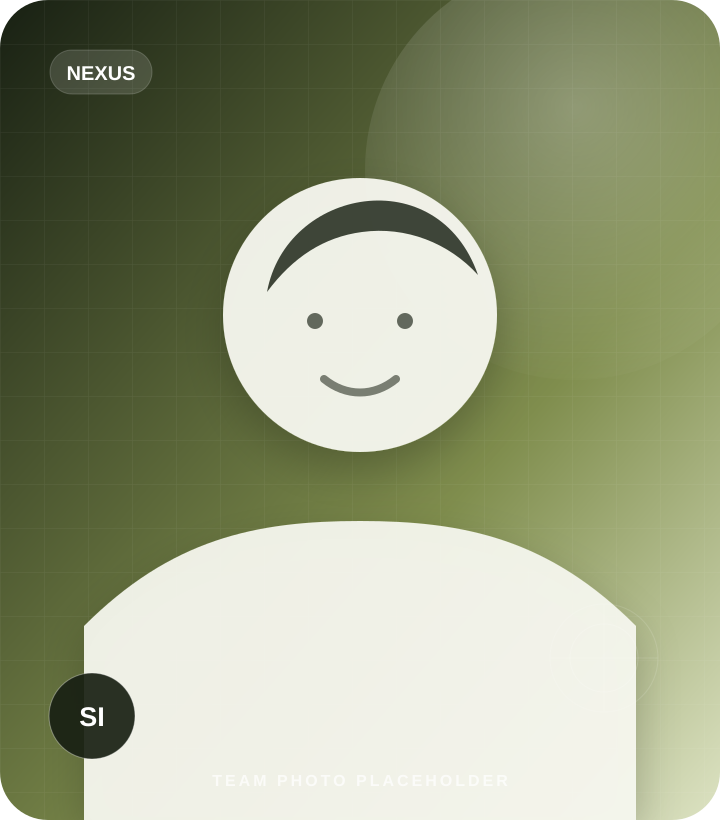
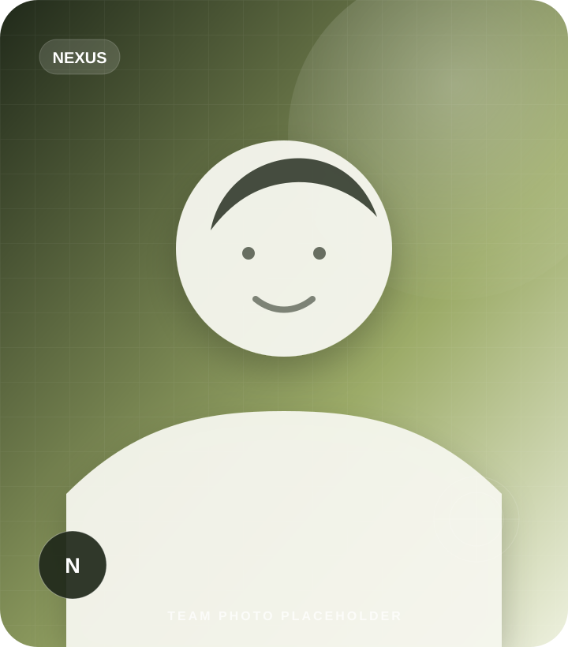
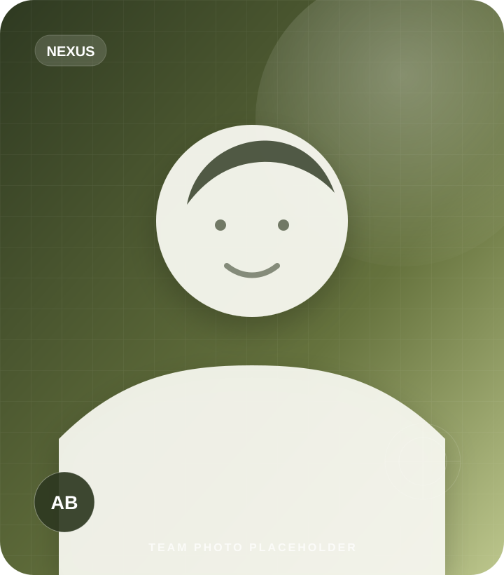

Leadership · RecoveryTanvir
Founder & Chief Executive Officer / WordPress Recovery Lead
Directly leads WordPress Recovery, oversees finance, supports cross-team sign-off and leads past-client outreach.
The site now reflects the 16-person core roster plus dedicated Secure Web Development leadership, with public-facing responsibilities for every named person.
Nexus uses a 16-person core operating roster, while Secure Web Development is led by Mahfuz with Jannatun Nahar contributing cross-functionally and the VAPT team reviewing Premium builds.
Clients do not need to coordinate separate specialists or repeat the same context across departments.
Relevant leads and practitioners contribute wherever their subject knowledge is required.
Client communication stays tied to clear decisions, progress, risks and next actions.
The first five rows total the official 16-person core roster. Secure Web Development is cross-functional and adds Mahfuz as delivery lead while Jannatun remains part of WordPress Recovery.
| Team | Lead | Members | Size |
|---|---|---|---|
| VAPT | Md Touhidul Islam | Ratul Islam Sikder, Ismail, Afran Robi, Maksuda Akter | 5 |
| WordPress Recovery + CVE | Tanvir (CEO) | Tasnimul Hasan, Jannatun Nahar, Abid | 4 |
| OSINT + IT Support | Shahin Rubel | Afroza Akter, Naima, Md Riad | 4 |
| AI / Data / Automation (n8n) | Shohidul Islam | Niaz | 2 |
| Client Relationship Management | Akash Bhuiya | — | 1 |
| Secure Web Development | Mahfuz | Jannatun Nahar (cross-functional) | 2* |
* Cross-functional delivery: Jannatun Nahar is counted in the WordPress Recovery core roster and also supports Secure Web Development.
The 16-person core roster and Secure Web Development lead are shown separately. Images and social URLs remain replaceable placeholders until verified assets are supplied.

Leadership · RecoveryFounder & Chief Executive Officer / WordPress Recovery Lead
Directly leads WordPress Recovery, oversees finance, supports cross-team sign-off and leads past-client outreach.
 VAPT
VAPTVAPT Team Lead
Owns engagement scoping, technical sign-off, team mentoring and client-facing technical calls.
Penetration Testing Specialist
Performs manual and automated testing for SQL injection, LFI, authentication and session weaknesses.

VAPTJavaScript & API Security Specialist
Maps endpoints and tests API authentication, authorization and business-logic weaknesses.

VAPTVAPT Analyst
Supports reconnaissance, exploitation, evidence capture, report drafting and retest coordination.
 VAPT
VAPTVAPT Analyst
Supports reconnaissance, exploitation, evidence capture, report drafting and retest coordination.
 Recovery
RecoveryMalware Recovery Specialist
Handles malware identification, malicious-file removal and technical cleanup execution.
Recovery & Secure Web Development Specialist
Supports malware cleanup and delivers general web development and secure web development work.
 Recovery
RecoveryWebsite Hardening & Monitoring Specialist
Configures hardening, backups and monitoring controls after cleanup and recovery.
OSINT & IT Support Lead
Leads reconnaissance methodology, agency IT and infrastructure support, and engagement sign-off.
 OSINT · Finance
OSINT · FinanceOSINT Analyst & Finance Coordinator
Delivers OSINT work and records finance entries the same day before technical work continues.
 OSINT · Finance
OSINT · FinanceOSINT Analyst & Finance Coordinator
Delivers OSINT work and maintains the same-day finance-entry discipline with Afroza.
OSINT & Internal IT Support Specialist
Supports OSINT delivery and internal software and hardware troubleshooting for team tooling.

AI · AutomationAI, Data & Automation Lead
Leads chatbot and automation builds, client customization and technical scoping.

AI · AutomationAI & n8n Automation Specialist
Builds chatbot templates, n8n workflows, demos and supporting data processes.
Secure Web Development Team Lead
Leads secure web development delivery and coordinates Premium builds with Jannatun and the VAPT team.

Client SuccessClient Relationship Manager
Coordinates client communication, requirements, progress updates, expectations and next actions.
Afroza Akter and Naima record finance entries the same day, before technical delivery continues.
Tanvir and Jannatun carry multiple responsibilities, so WordPress Recovery and Secure Web Development work is scheduled against active capacity.
Mahfuz and Jannatun scope Premium Secure Web Development jointly with Md Touhidul Islam’s VAPT team before quotation and pre-launch testing.
Sensitive information is discussed only with people who need it for the authorized work.
Updates distinguish confirmed evidence, informed assessment and unresolved uncertainty.
Tasks, findings, decisions and handoffs remain visible throughout an engagement.